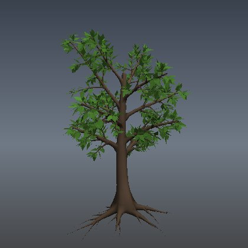
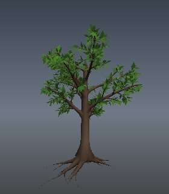
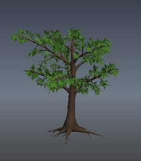
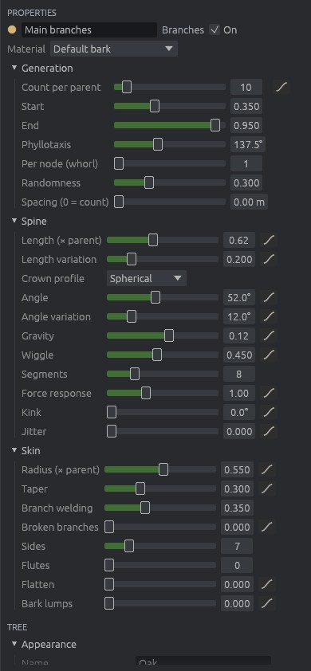
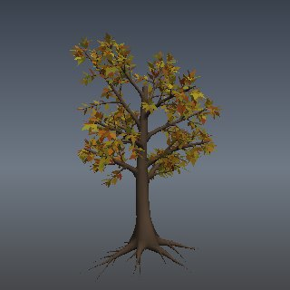
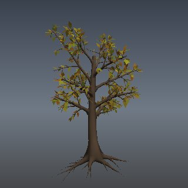

Your first tree
This walkthrough takes you from a preset to an exported model in about ten minutes. It touches the most common tasks: choosing a species, changing the shape of its branches, adjusting the season and exporting the result for a game engine.
1. Start from a preset
In the left panel, under Species presets, click Oak. The viewport shows a broad deciduous tree with roots, two branch levels and leaves.

Look around the tree: drag in the viewport to orbit, scroll to zoom and drag with the right mouse button to pan. Press F to frame the whole tree again.
2. Make a different individual
Click Randomize in the toolbar. ArborStudio picks a new random seed, so you get another tree of the same species: the branches sit in different places, but their number, length and angle follow the same settings. Click it a few times until you like the result.



3. Change the branches
- In the Generation list at the top left, click Main branches. The branches are highlighted in the viewport and their settings appear in the Properties panel on the right.
- Under Spine, drag Gravity to the right. The branches droop more the further you go; negative values make them curve upwards.
- Drag Angle to change how far the branches spread from the trunk.
- Under Generation, change Count per parent to add or remove branches.

Every change can be undone with ⌘Z.
4. Pick a season
Click an empty part of the viewport, such as the sky, or press Esc, so that no generator is selected. The Tree section of the Properties panel now holds the settings for the whole tree. Drag Autumn to colour the leaves and Fallen leaves to thin out the crown.


5. Check the levels of detail
Click 1, 2 and 3 next to LOD in the toolbar. Each level uses fewer triangles but keeps the outline of the tree, so an engine can switch between them without visible popping. BB shows the billboard, a set of flat cards for very large distances. The status bar shows the triangle count of the current level.
6. Export the tree
- Choose File › Export GLB (glTF)… or press ⌘E.
- Choose a file name and folder, for example inside your game project's assets folder.
- Import the file into your engine. See Exporting for notes on Unity, Unreal and Godot.
By default the export contains all four levels of detail and the billboard. You can turn either off in the File menu.
7. Save the project
Choose File › Save (⌘S). The project file (.arbor.json) keeps every setting, so you can come back later, change the tree and export it again. Recently used projects are listed under File › Open Recent.
Next steps
- Read How trees are built to understand generators and the hierarchy.
- Add a bark texture in Materials and textures.
- Shape settings along the tree with Curves.